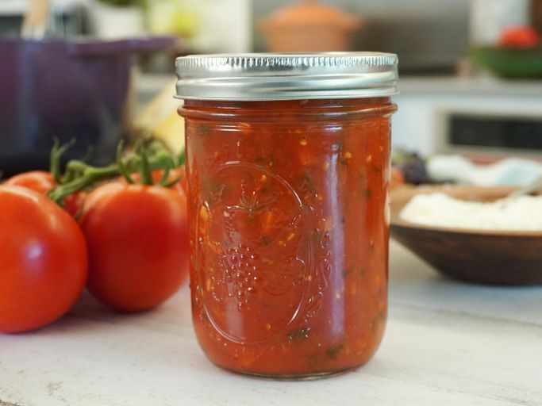

Tomato sauce

True Italian tomato sauce should be always ready in your kitchen cupboard! You can prepare various delicious recipes with this sauce. That's include gnocchi etc.
Ingredients:
- Fresh tomatoes
- Olive oil
- Onion
- Garlic
- Seasonings and herbs
Steps:
- Chop all "chopable" ingredients and put them into pot
- Add generous amount of olive oil and herbs
- Add cup of water
- Wait until all ingredients are soft and it looks like sauce